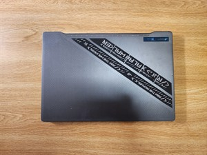
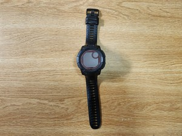
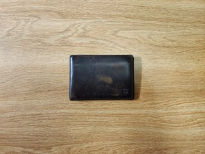
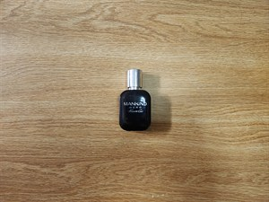
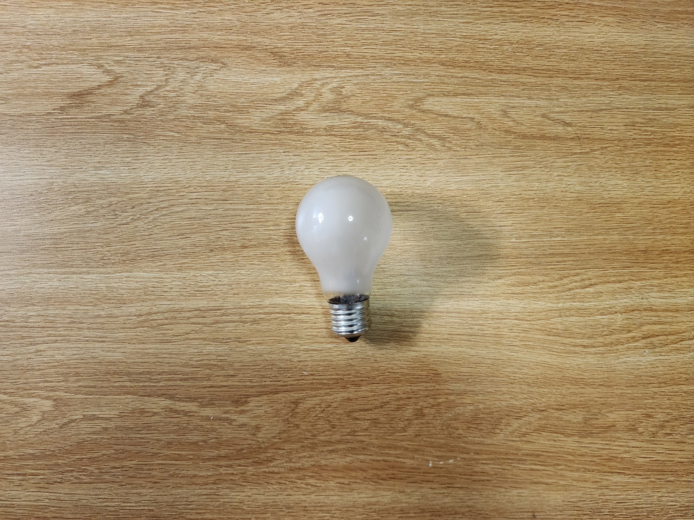
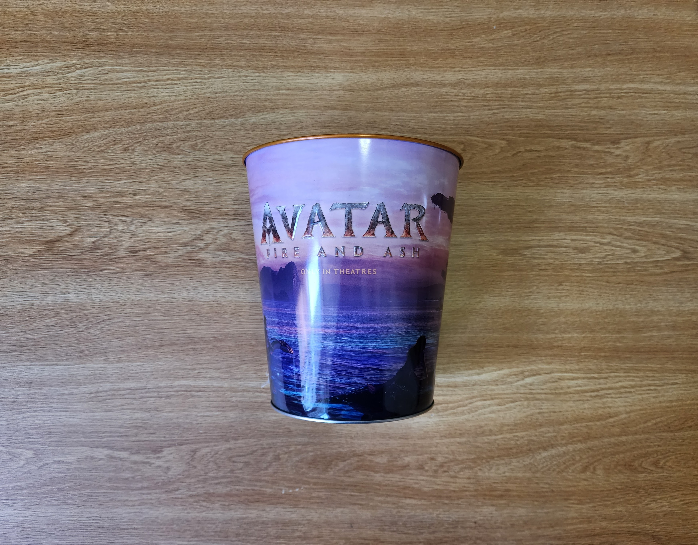

Preface
I decided to start recording my weekly disposal habits not because I'm particularly obsessed with garbage, but because I started noticing a pattern of accumulation that was cramping my space—both physically in my room at my Busch Apartment and mentally. As a student juggling CS projects and internships, my environment tends to reflect my stress levels: chaotic and cluttered.
Specifically, I want to track the lifecycle of the technology and gear I invest in. I spend a lot of time researching specs, but I rarely analyze when and why I let things go. By documenting this, I hope to see if I'm buying things for the long haul or just cycling through upgrades for the dopamine hit.
As archaeologist Sarah Newman puts it, what we discard says as much about us as what we keep. Meanwhile, artist Vik Muniz has turned literal garbage into gallery-worthy art, challenging our perceptions of waste. And with global e-waste projected to hit 82 million tonnes by 2030, tracking even a single student's output feels relevant.
Continue reading → About This Project...
Overview
This week was significantly heavier on the "value" scale than usual. Unlike previous weeks filled with takeout containers from King of Gyro or energy drinks, this week involved letting go of serious hardware. The total monetary value is likely the highest it's ever been due to a few significant tech sales.
The Tech Turnover
Featuring the ASUS ROG G14 Laptop, Garmin Instinct 2X Solar, and a USB-C cable. The laptop carried me through three years of all-nighters and Data Structures finals; the watch tracked every hike and heart rate spike through exam season. Even the cable outlived the phone it came with. These were functioning tools moved on to make room for upgrades — each one traded away with a little reluctance.
Worn-Out Daily Drivers
Includes a black leather wallet that lived in my back pocket every single day for four years — the one thing I always patted for before leaving the apartment. The grey Tommy Hilfiger sneakers were my go-to shoes for my retail job at Express, where the dress code demanded something that looked sharp but could survive eight hours on a sales floor. And the hanger — a cheap plastic one from Target that held my work shirts until it snapped under the weight of one too many jackets. These were the unglamorous essentials that kept daily life running until they physically couldn't anymore.
The Empty Vessels
Mankind Hero Cologne, a frosted lightbulb, and an Avatar popcorn bucket. The cologne was my go-to scent for every night out and every "I should smell decent for this group project" moment — rationed down to the last tilted spray. The lightbulb warmed three years of late-night study sessions before flickering out mid-coding marathon. And the Avatar bucket was an impulse buy that became a pencil holder for a month before I admitted it was just taking up desk space. The shells of past experiences, finally clearing out.
Item Disposal Data
| Item | Weight | Source | Location | Cost | Owned | Disposal | Condition |
|---|---|---|---|---|---|---|---|
| ASUS ROG G14 Laptop | ~3.6 lbs | Amazon | Desk | ~$1,400 | 3 Years | ||
| Garmin Instinct 2X | ~67g | Garmin Store | Wrist | ~$450 | 1 Year | ||
| USB-C Cable | ~30g | Samsung | Drawer | ~$10 | 5 Years | ||
| Leather Wallet | ~50g | Amazon | ~$40 | 4 Years | |||
| Tommy Hilfiger Sneakers | ~2 lbs | Macy's | Closet | ~$80 | 2 Years | ||
| Hanger | ~40g | Target | Closet | ~$1 | 2 Years | ||
| Mankind Hero Cologne | ~100g | Macy's | Drawer | ~$70 | 1 Year | ||
| Frosted Lightbulb | ~30g | Home Depot | Lamp | ~$3 | 3 Years | ||
| Avatar: Fire and Ash Bucket | ~150g | Rutgers Cinema | Desk | ~$15 | 1 Month |
Disposal Gallery
Nine items, one week. From a high-end gaming laptop to a humble hanger — here's everything that left the apartment.

The workhorse ROG G14 — three years of late-night coding sessions, finally passed on

Garmin Instinct 2X — survived hikes and finals weeks, sold for an upgrade

A faithful USB-C cable — frayed beyond salvation after five years of service

The leather wallet — creased, cracked, and card slots stretched past their limit

Tommy Hilfiger sneakers — polished on the outside, worn down by retail on the inside

A hanger — snapped mid-shift and quietly retired to the trash

Mankind Hero Cologne — every last spritz accounted for, bottle sent to recycling

Frosted lightbulb — three years of warm glow, ended with a flicker

Avatar bucket — a movie-night relic, popcorn grease and all, recycled
Item Anecdotes
Every object has a story. Here's a brief memory attached to each of this week's nine departures:
ASUS ROG G14 Laptop
This laptop carried me through the hardest semesters of my CS degree. I remember pulling an all-nighter for my Data Structures final project, the fans screaming as I compiled and tested code at 4 AM in the Busch Campus library. The keyboard had a permanent shine on the WASD keys from late-night gaming breaks between study sessions. When I finally sold it, I wiped the drive and realized I had over 200 project folders saved — each one a small chapter of my education.
Garmin Instinct 2X Solar
I bought this watch right before a hiking trip to the Delaware Water Gap with friends. It tracked every step, every heart rate spike on the steep trails, and even my terrible sleep schedule during finals. The solar charging was a flex — I'd leave it on the windowsill during lectures and it would top itself off. I sold it only because the Apple Watch Ultra caught my eye, but part of me still misses the rugged simplicity of this one.
USB-C Cable
This cable came bundled with a Samsung phone I bought back in freshman year. It outlived the phone itself by three years, spending its retirement charging everything from portable speakers to controllers. The fraying started near the connector — I wrapped it in electrical tape twice before admitting defeat. It's funny how a ten-dollar cable can become the most essential thing in your drawer until it isn't.
Leather Wallet
Four years in my back pocket, every single day. This wallet survived a trip through the washing machine (my fault), a rainstorm at a Rutgers football game, and the daily compression of sitting in lecture halls. The card slots got so stretched that my ID would slide out if I tilted it wrong. I kept meaning to replace it, but it had that broken-in feel that a new wallet just can't replicate — until it literally started falling apart at the seams.
Tommy Hilfiger Sneakers
These were purchased specifically for my job at Express, where athletic sneakers were banned. They looked sharp enough to pass the dress code but were comfortable enough for eight-hour holiday shifts sprinting between the register and the stockroom. I remember one Black Friday where I clocked over 15,000 steps in them. The inner heel lining eventually wore through completely, and the soles went glassy-smooth — retired to donation because someone out there can still get a few casual miles out of them.
Hanger
Not every item has a dramatic backstory. This hanger held my work shirts in the closet for two years without complaint. Then one evening, while I was rushing to grab a button-down before a shift, it snapped clean in half. The hook stayed on the rod; the rest clattered to the floor with my shirt. A one-dollar casualty of the daily grind — not mourned, but still noted for the record.
Mankind Hero Cologne
I picked this up at Macy's on a whim during a holiday sale. It became my default scent for going out — every party, every date, every "I want to smell decent for this group project meeting" moment. I rationed the last quarter of the bottle for months, tilting it at absurd angles to get one more spray. When it finally gave nothing but air, I rinsed the bottle and tossed it in the recycling bin. End of an era, one spritz at a time.
Frosted Lightbulb
This incandescent bulb lit my desk lamp for three years — warm, yellowish light that made late-night studying feel a little less harsh than the fluorescent overheads in my apartment. I noticed it flickering during a coding marathon one night and figured it had a few days left. It died the next morning. Replacing it with an LED felt like a tiny betrayal, but my electric bill probably disagrees.
Avatar: Fire and Ash Bucket
My roommates and I went to see Avatar: Fire and Ash at the Rutgers Cinema on opening weekend. The collectible popcorn bucket was an impulse buy — fifteen dollars for what was essentially a large plastic cup shaped like a volcanic rock. It sat on my desk for a month as a pencil holder before I accepted it was just taking up space. Into the recycling it went, popcorn grease stains and all. A fun night, a brief second life, and a clean desk.
Coda
Converting unused tech back into cash feels like a win. My room is starting to look less like a storage unit and more like a place to actually get work done. Selling the laptop and watch alone recouped a few hundred dollars — money that went straight toward a new mechanical keyboard and a monitor arm. I'm riding this momentum into next week, where I plan to tackle the paper chaos accumulating on my bookshelves.
What surprised me most was how emotional some of these disposals felt. The wallet, the sneakers, even the cologne — they weren't just objects, they were tied to specific moments and phases of my life. Letting go of them felt less like cleaning and more like closing small chapters. The philosopher Marie Kondo might say these items no longer "sparked joy," but I'd argue they sparked something — just not a reason to keep them around.
If you're curious about the environmental side of all this, the EPA's recycling guide is a good starting point for understanding what can (and can't) go in the bin. For selling used electronics, platforms like Swappa and Back Market make it surprisingly painless. And if you've got wearable items in decent shape, organizations like One Warm Coat or local Goodwill drop-offs can give your old daily drivers a second life.
Sometimes one person's purge is another person's upgrade. And sometimes it's just a cleaner desk and a lighter mind — which, heading into midterm season, is worth more than any of this stuff ever was.